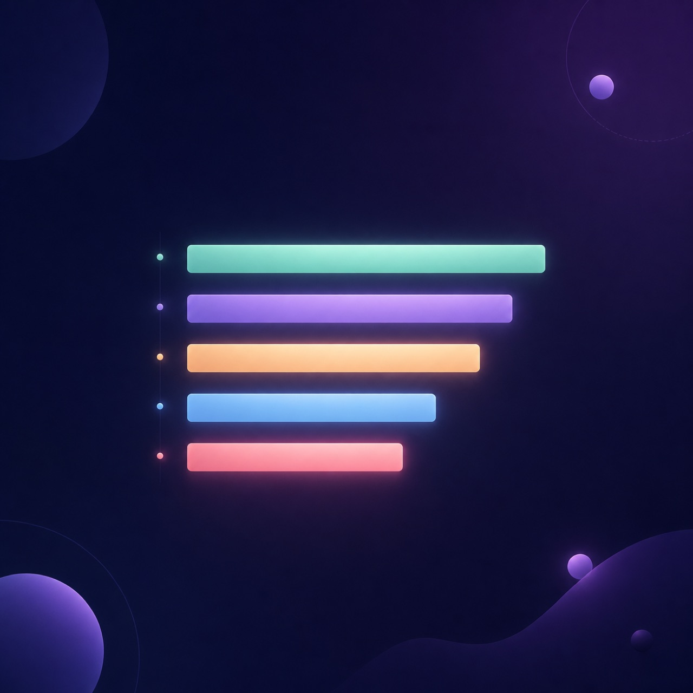

AI 시대의 오픈소스
1회차 — 왜 지금 다시 중요한가
- 오픈소스는 코드 공개가 아니라
- AI 시대의 학습·협업·커리어·제품 확산 방식이다
Chapter 1 · 0:00 — 0:03
도입
침묵에서 출발
- 마지막으로 설치한 라이브러리, 기억하시나요?
마지막 설치
- “마지막으로 npm install / pip install 한
- 라이브러리 이름은?”
1분 안에
- “그 라이브러리를 만든 사람·이유·
- 라이선스를 1분 안에 설명할 수 있나요?”
30초 노트
핸드아웃 첫 페이지
- 최근 사용한 npm/pip 패키지: ____
- 만든 사람/조직: ____ (모름 OK)
- 라이선스: ____ (모름 OK)
이미 쓰고 있다
- react · vue · next · pandas · numpy
- pytorch · transformers · langchain
- ruff · uv · prettier · jq
- → 나는 이미 매일 OSS 위에 있다
오늘의 약속
0:03 — 0:06 · LO와 6주 흐름
- 수업이 아니라 워크숍
- 매주 끝나면 GitHub에 흔적이 남는다
오늘의 LO
끝나면 할 수 있는 것
- LO1. 2025 OSS 변화 3가지 설명
- LO2. Trending 5축 분석
- LO3. 6주 후보 OSS 3개 확보
6주 흐름
매주 GitHub에 흔적
- 1주 후보 3 + 팀 헌법
- 2주 팀 저장소 + 첫 머지
- 3주 LICENSE + Templates
- 4주 본격 PR + AI 로그
- 5주 멀티 에이전트 PR / 6주 발표
평가 비중
100점 분배
20
OSS 이해도
20
GitHub 협업
25
실제 기여
20 / 15
AI 활용 / 발표

AI는 ‘검증’
- “썼는가”가 아니라
- “사용하고 사람이 검증했는가”
Chapter 2 · 0:06 — 0:16
2025 풍경
한 페이지로 보는 오늘
- Octoverse 2025가 보여주는 세 가지 변화
Octoverse
2025-10-28 헤드라인
- “1초마다 신규 개발자 1명이
- GitHub에 가입한다”
세 숫자
기억할 헤드라인
36M+
신규 개발자 (2025)
#1
TypeScript, 1위 언어
1M+
Copilot 에이전트 PR (5개월)
변화 ①
AI / 에이전트
- 보조 도구를 넘어 협업 과정 안으로
- PR 본문 설명 · 변경 제안
- 리뷰 초안 작성
변화 ②
신규 개발자 유입
- “시간 많은 고수만의 영역” 시대 끝
- 매일 새로 들어오는 신규 개발자
- 오픈소스 진입장벽이 빠르게 낮아짐
변화 ③
타입 언어 확산
- TypeScript의 1위 부상
- AI 시대에는 명시적 구조가 중요
- 검증 가능한 코드가 더 강해진다
세 변화 묶음
한눈에
- ① AI 에이전트가 들어왔다
- ② 신규 개발자가 쏟아져 들어온다
- ③ 타입 언어가 표준이 된다
과거 vs AI
목적 · 참여자
과거
목적: 비용·자유
참여자: 고수·학자·회사
AI 시대
목적: 학습·협업·커리어·제품
참여자: 매일 신규 개발자
과거 vs AI
도구 · 단위 · 검증
과거
도구: git + IDE
단위: 코드
검증: 커뮤니티
AI 시대
도구: git + IDE + AI 에이전트
단위: 코드 + 데이터 + 모델 + 로그
검증: 커뮤니티 + AI + 사람
오늘의 한 줄
- 오픈소스는 코드 공개가 아니라
- AI 시대의 학습·협업·
- 커리어·제품 확산 방식이다
30초 페어
옆사람과
- 직접 git clone 해본 OSS가 있는가?
- 있으면 그 이름은?
데이터 메모
핸드아웃 빈칸
- 신규 개발자 ____ M+
- 1위 언어 ____
- Copilot 5개월 PR ____ M+
- AI 시대 OSS = ____ 방식
Q1
TypeScript 1위 = JS 죽었다?
- 아니다. JS와 TS는 한 가족
- 합산하면 여전히 압도적
- → 타입 명시가 더 중요해졌다는 신호
Q2
Copilot 1M PR = 사람보다 많다?
- 아니다. 전체 PR의 일부
- 중요한 점은 다른 데 있다
- → AI가 PR의 주체로 등장했다
Q3 · Q4 · Q5
왜 / Octoverse 편향 / 한국
- 왜? GitHub URL = 공개 검증된 실력
- Octoverse는 GitHub 1차 자료, 큰 흐름엔 유용
- 한국 OSS: NAVER · Kakao · Toss · 당근 활발
Chapter 3 · 0:16 — 0:36
실습 1
GitHub Trending 5축 분석
- 20분 · 페어 1조 · 한 장에 압축
실습 개요
- 20분 (작업 16 + 갤러리 4)
- 난이도 ★★ 입문~초급
- 산출물 5축 분석 1장
- 팀 단위 페어 2명 1조
통찰 한 줄
- “별 수가 많다고
- 좋은 프로젝트는 아니다”
- → 5축으로 직접 확인한다
5단계
20분 진행
- 1) 페어 짝짓기 + Trending 1분
- 2) 분석 대상 1개 선택 2분
- 3) 5축 분석 10분
- 4) 한 장 정리 3분
- 5) 갤러리 워크 4분
5축
한 프로젝트 살아 있는가
- README · Issues · PRs
- Releases · License
축 1 · README
5분 안에 무엇이 보이나
- 한 줄 소개 ____
- 설치/시작 위치 ☐상단 ☐중간 ☐없음
- 데모/스크린샷 ☐있음 ☐없음
- 기여 가이드 링크 ☐CONTRIBUTING ☐없음
- 평가 ★~★★★★★ ____
축 2 · Issues
활동성 신호
- 열린/닫힌 수 ____ / ____
- 최근 활동 시각 ____
- good-first-issue ☐있음 ____ ☐없음
- 자주 보이는 단어 3개 ____
- 응답 속도 ☐빠름 ☐보통 ☐느림
축 3 · PRs
협업 패턴
- 열린/머지 PR 수 ____ / ____
- 최근 머지 1개 제목 ____
- PR 본문에 있는 것:
- ☐변경 요약 ☐이슈 링크
- ☐스크린샷 ☐체크리스트
축 4 · Releases
유지보수의 흔적
- 최신 버전/일자 ____ / ____
- changelog ☐있음 ☐없음
- 노트 깊이:
- ☐한 줄 ☐변경 요약
- ☐마이그레이션까지
축 5 · License
쓸 수 있는가
- LICENSE 위치 ☐루트 ☐다른 폴더 ☐없음
- 라이선스 종류 ____
- 회사 제품에 써도 되나?
- 1줄로 요약 ____
종합 한 줄
5축 → 결론
- 이 프로젝트는 ____
- 6주 후보로 적합? ☐예 ☐아니오
- 그 이유 ____
예시 — astral-sh/ruff
- Python 린터 + 포매터
- Rust로 작성, 매우 빠름
- MIT, CHANGELOG 모범
ruff 5축
체크 결과
★★★★★
README — 설치 한 줄 + 벤치
★★★★☆
Issues — good-first 있음
★★★★★
PRs — 본문 패턴 일정
★★★★★
Releases — CHANGELOG + 마이그
★★★★★
License — MIT, 거의 자유
예시 종합
ruff
- 6주 후보 적합
- docs PR / 작은 룰 추가 진입 가능
- 응답 빠름
추천 풀 ①
웹 · AI 프레임워크
- vercel/next.js — 웹 / MIT
- huggingface/transformers — Apache-2.0
- langchain-ai/langchain — AI / MIT
- tldraw/tldraw — 캔버스 / 부분 OSS
추천 풀 ②
도구 · 한국 OSS
- astral-sh/uv — Python 도구 / MIT
- astral-sh/ruff — 린터 / MIT
- denoland/deno — 런타임 / MIT
- toss/es-toolkit — JS 유틸 / MIT (한국)
막혔을 때 ①
- 외국어/낯선 프로젝트 → 추천 풀 1개
- README 너무 길 → TL;DR + Getting Started만
- 이슈 너무 많음 → 최근 1주 10개만
막혔을 때 ②
- Rate Limit → 로그인 후 재시도
- 안 되면 옆 페어 화면 함께
- 관심 분야 다름 → 한 명 분야로 진행
지금 시작
16분 작업 타이머
- https://github.com/trending
- All languages, Today 탭
- 한 명은 노트북 / 한 명은 핸드아웃
정리
한 장에 압축
- 포스트잇 또는 1슬라이드
- 5축 핵심 발견만 골라
- 3분 안에 정리
갤러리 워크
4분
- 근처 페어 자료 둘러보기
- 내 프로젝트와 가장 다른 점 1개 메모
- 한 팀 30초 인상 깊은 점 공유
시간 남으면
- 2번째 프로젝트 5분 빠른 비교
- 별 수 / 활동성 비율 같은
- 자기만의 지표 만들기
한 줄 정의
오늘 등장한 용어
- Octoverse: GitHub 연 1회 1차 데이터
- Trending: 오늘 커뮤니티의 흥미
- OSS: 사용·수정·배포·기여 허용 SW
- AI 코딩 에이전트: 직접 작업 진행
5축 회고
- “이 프로젝트가
- 살아 있는가”의 신호를
- 한 번 직접 본 사람
Chapter 4 · 0:36 — 0:38
전이
시선의 속도를 올린다
- 다음 12분: AI로 더 빠르게 신호를 뽑는다
기억할 한 문장
- “사람이 검증하지 않은 AI 답은
- 단지 ‘그럴듯한 텍스트’일 뿐이다”
Chapter 5 · 0:38 — 0:48
AI 도구
도구 풍경 + 후보 분석
- AI는 답이 아니라 시선의 속도를 올린다
AI가 바꾸는 것
OSS 협업의 진입장벽
- 저장소 읽고 README 요약
- 이슈 분류 / PR 본문 초안
- 단, 사람 검증 없이는 텍스트일 뿐
도구 ① 클로즈드
학생 무료 옵션
- GitHub Copilot — Free / Student Pack
- Claude · Claude Code — 웹 무료 티어
- Cursor — 무료 티어
- Gemini Code Assist — 개인 무료
도구 ② OSS
완전 무료
- Continue.dev — Apache-2.0
- · BYOM 실험에 좋음
- Aider — Apache-2.0
- · CLI 기반 코드 수정 자동화
6주 학습 경로
도구 1개 → 깊게
- 1주 Copilot Free + Claude 웹
- 2주 PR 본문 자동 생성
- 3주 라이선스 AI 질문 + 원문 대조
- 4주 Claude Code or Cursor 깊게
- 5주 Continue/Aider 체험 / 6주 졸업
후보 분석 프롬프트
지금 30초 시연
다음 GitHub 저장소의 README를 보고 답해줘. 1) 한 줄 요약 2) 처음 기여하려는 사람 진입점 3개 (이슈 라벨 / 문서 보강 / 작은 버그 수정) 저장소: [앞 실습 URL] README: [README 본문 또는 핵심 단락]
AI 사용 로그
오늘 처음 노출
- 단계 / AI 도구 / 프롬프트 한 줄
- AI 출력 한 줄
- 사람이 검증한 것
- 결과: 채택 / 수정 / 기각
왜 로그?
- “썼는가”는 평가 기준이 아니다
- “검증했는가”가 기준
- → 로그는 검증의 증거
검증 5축 ①
사람이 확인할 것
- 1) 추천 라벨이 실제로 존재하는가
- 2) “응답 빠름” → 최근 1주 댓글 있는가
- 3) “좋은 진입점” → 24~48h 크기인가
검증 5축 ②
- 4) AI 답에 출처 URL이 함께 나오는가
- 5) 라이선스를 잘못 답하지 않았는가
- → 다섯 모두 본 뒤 채택
도구 선택
1분 결정
- 1회차 끝까지 손에 쥘 1개:
- ☐ Copilot Free ☐ Claude
- ☐ Cursor ☐ Gemini
- 다음 주까지 시도할 작업 1줄 ____
도구 결정 원칙
- “많이 시도하지 말고
- 하나를 손에 잡아라”
AI 도구 마무리
- AI는 시선의 속도
- 사람은 검증의 정확도
- 둘이 만나야 PR이 된다
Chapter 6 · 0:48 — 0:54
팀 헌법
6분 1페이지
- 3~5인 + 약속 4항목
활동 개요
- 6분 (결성 2 + 작성 4)
- 난이도 ★ 입문
- 산출물 팀명 + 헌법 1장
- 4항목: 역할 / 회의 / 의사결정 / 이탈
4단계 진행
- 1) 관심 도메인 그룹 1분
- 2) 3~5인 결성 1분 (PR 경험자 1↑)
- 3) 팀명 정하기 10초
- 4) 헌법 1페이지 4분

헌법 ① 역할
잠정, 2회차에 확정
- Maintainer (리더/의사결정 진행) ____
- Contributor (코드/내용 주력) ____
- Docs (문서·발표) ____
- AI / Automation (AI 로그 책임) ____
헌법 ② 회의
주기와 채널
- 주 ___회 / ___시 ~ ___시
- 장소 또는 비대면 도구 ____
- 비동기 채널 ____
헌법 ③ 의결
의사결정
- 만장일치 / 다수결 / 메인테이너 결정
- 비동기 의사결정 채널 ____
- SLA 예) 24h 내 답 없으면 패스
헌법 ④ 이탈
갈등 처리
- 이탈 시: 합병 / 솔로팀 / 신규 충원
- 갈등 1차 처리 ____
- 미해결 시 → 멘토 상신
- 한 줄 비전 (6주 후 자랑) ____
체크리스트
마무리 전 확인
- 팀 인원 3~5명
- PR 경험자 1명 이상
- 팀명·헌법 4항목 채워짐
- 전원 서명 / 한 줄 비전 적힘
막혔을 때
- 한 영역 몰림 → 더 작은 주제로 분할
- PR 경험자 없음 → 다음 주 천천히
- 1~2명뿐 → 가까운 팀과 합병
- 4분 안 됨 → 잠정안 + 다음 주 확정
Chapter 7 · 0:54 — 1:00
마무리
KPT + 다음 주
- 오늘 한 일: 후보 3개를 손에 쥐었다
KPT 회고
5분
- K (Keep) 잘된 것 ____
- P (Problem) 막힌 것 ____
- T (Try) 다음 시도 ____
- 오늘 GitHub에 남긴 흔적 URL ____
다음 주
2회차 5/7 목 19:00
- OSS의 기본 언어:
- Issue · Branch · Commit · PR · Review
- → 후보 1개에 깃발을 꽂는다
사전 준비
다음 주까지
- 후보 1개를 가족·친구에게 1분 설명
- git clone 가능한 환경 확인
- AI 도구 1개 손에 잡혀 있음
약속 카드
팀 단위 / 다음 주 시작 전
- 1) 후보 1개 더 깊이 (10분)
- 2) 팀 저장소 미리 (선택)
- 3) AI 사용 로그 1행 추가
- 차단 요인 / 비동기 채널 ____
다음 주에
첫 깃발을 꽂읍시다
- 오픈소스는 코드 공개가 아니라
- AI 시대의 학습·협업·
- 커리어·제품 확산 방식이다